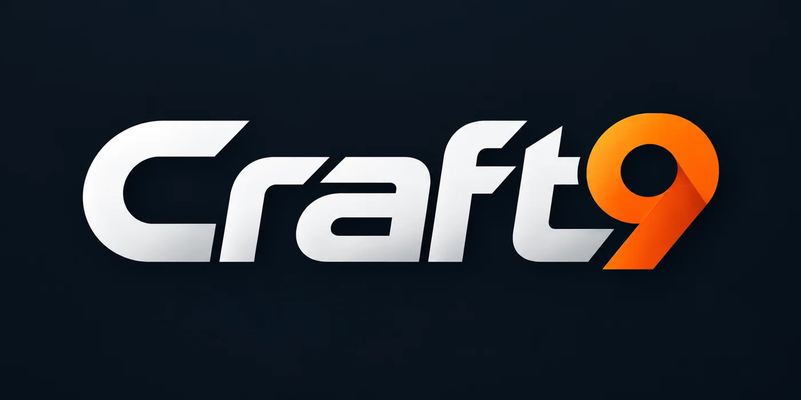

AV Construction & Maintenance
Custom website & inquiry management
A professional residential construction website with service presentation, customer inquiry forms, and a database-backed administrative dashboard.
Rumstok Labs builds independent software tools with clarity, structure, and deliberate scope.
Each project stands on its own. The shared standard is simple: make it clear, make it usable, and make it durable.
TelosXL is an intelligent property awareness and response platform designed to connect sensors, autonomous assets, and operational decision-making into one coordinated system. From detecting events to deploying physical assets, TelosXL is being developed to help facilities monitor, investigate, and respond to activity across their environments.
Explore TelosXL ↗
Craft9 is a browser-based work order management platform designed to make organizing, assigning, tracking, and completing work straightforward. Built around a streamlined operational core, Craft9 brings work orders, recurring maintenance, labor tracking, and team accountability into one organized system—without unnecessary complexity.
Explore project ↗
Tabd is a streamlined, browser-based tablature editor designed to make writing, editing, and organizing guitar and bass music simple and intuitive. With a clean interface and a focus on practical music creation, Tabd keeps the attention on the music rather than the software.
Explore project ↗Precision font-building tool for designing, testing, and refining custom typefaces and symbolic writing systems.
Explore project ↗Structured cipher system and encoding framework built for custom symbolic communication, layered obfuscation, and controlled message transmission.
Explore project ↗Focused document consolidation tool built to collect, organize, and export project files into clean, structured reference packages for development, auditing, and long-term system clarity.
Explore project ↗Responsive business websites, clear service presentation, and practical administrative tools—designed around how each business actually works.
Explore web development ↗A professional residential construction website with service presentation, customer inquiry forms, and a database-backed administrative dashboard.
An elegant permanent jewelry website with upcoming event listings and an owner-friendly event management dashboard.